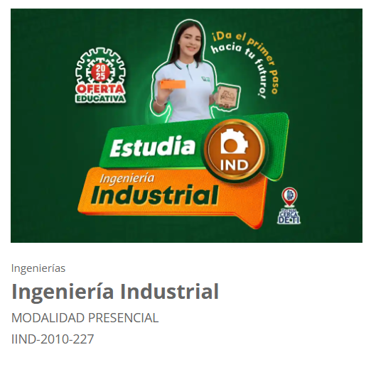

Los objetivos educacionales del programa de Ingeniería Industrial son: Formar profesionales competentes en el ámbito de la ingeniería industrial, capaces de diseñar, implementar y mejorar sistemas integrados de personas, materiales, información, equipos y energía, para optimizar procesos productivos y de servicios, contribuyendo al desarrollo sostenible y a la competitividad de las organizaciones.
AE1. Aplica habilidades directivas y de ingeniería en el fortalecimiento e innovación de las organizaciones para la toma de decisiones efectivas adaptándolas al entorno globalizado.
AE2. Diseña e innova estructuras administrativas y procesos para la generación de competitividad en los mercados globales con principios éticos y profesionales.
AE3. Gestiona eficientemente los recursos de la organización con el fin de suministrar bienes y servicios de calidad mediante el análisis e integración de la información para la toma de decisiones.
AE4. Diseña, Emprende y Dirige nuevos negocios y/o proyectos de manera sustentable en mercados competitivos con compromiso ético.
AE5. Diseña e implementa estrategias de mercado basadas en la recopilación de fuentes primarias y secundarias para el incremento de la competitividad organizacional en un contexto globalizado.
AE6. Implementa planes y programas de calidad, seguridad e higiene para la mejora del entorno laboral que resuelvan problemas complejos de las organizaciones.
AE7. Dirige equipos de trabajo con fundamento legal para la mejora continua y el crecimiento integral de las organizaciones, potencializando el desarrollo humano en escenarios de incertidumbre.
AE8. Gestiona la cadena de suministros y logística empresarial con un enfoque orientado a procesos de calidad para incrementar la productividad mediante el análisis de datos para establecer propuestas concretas.
AE9. Interpreta variables económicas y la información financiera para detectar oportunidades de mejora e inversión que propicie la rentabilidad del negocio.
AE10. Aplica métodos de investigación para el desarrollo e innovación de modelos, sistemas, procesos y productos en las diferentes dimensiones de la organización mediante el análisis de datos con un enfoque sustentable.